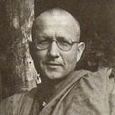

|
SO WHAT  |
Venerable Viradhammo (Vitauts Akers) was born at Esslingen in Germany
in 1947 to Latvian refugee parents. They moved to Toronto, Canada, when
he was 5 years old. He studied engineering at the University of Toronto
but became disillusioned with academic life, and left in 1969 to go
and work in Germany. Later, while living in India, he encountered Buddhism,
meeting the late Samanera Bodhesako, who introduced him to the writings
of Venerable Nyanavira Thera. He eventually travelled to Thailand to
become a samanera at Wat Mahathat and took -- upasampada -- in 1974 at
Wat Pah Pong. He was one of the first residents at Wat Pah Nanachat. |
|
The following teaching on the 'Four Noble Truths' is taken from a talk
given by Venerable Viradhammo during a ten-day retreat conducted in
Bangkok for Thai lay people, in June 1988. THIS EVENING WE MIGHT BEGIN by considering the legend of the life of the Lord Buddha. Now we could consider this story as factual history. Or, we could also look at it as a sort of myth -- a story that reflects back on our own development as beings seeking truth. In the story we are told that before his enlightenment, the Bodhisatta (Buddha-to-be) lived in a royal family with a lot of power and influence. He was a very gifted person, and had all that any human being could wish for: wealth, intelligence, charm, good looks, friendship, respect, and many skills. He lived the princely life of luxury and ease. The legend has it that when the Bodhisatta was first born, his father the king received a prediction from the wisemen. They said there were two possibilities: either this son would become a world-ruling monarch, or he would become a perfectly enlightened Buddha. Of course the father wanted his son to carry on the business of being a monarch; he didn't want him to become a renunciant. So everybody in the palace was always trying to protect the prince. Whenever anyone grew vaguely old or sick they were taken away; nobody wanted the prince to see anything unpleasant that might cause him to leave. But then at the age of twenty-nine, curiosity struck. The prince wanted to see what the world outside was like. So off he went out with his charioteer and --what did he see? The first thing he saw was a sick person -- all covered with sores, in pain, and lying in his own filth. A thoroughly wretched human condition. 'What's that?' the prince asked his attendant. The attendant replied: 'That's a sick person.' After a discussion the prince realised, for the first time, that these human bodies can become sick and painful. The attendant pointed out that all bodies had this potential. This came as a great shock to the prince. The following day he went out again. This time he saw an old person: all bent over with age, shaking, wrinkled, grey-haired, barely able to hold himself up. Again, shocked by what he saw, the prince asked: 'What's that?' 'That's an old person,' the attendant replied. Everybody grows old.' So the prince realised that his body too had this potential to become old. With that he went back to the palace quite bewildered by it all. The third time he went out, and saw a dead person. Most of the townsfolk were busy, happily waving at their attractive prince, thinking he was having a great time. But behind the crowds, there were people carrying a stretcher with a corpse on it, going to the funeral pyre. That was a really powerful one for him. 'And what is that?!' he asked. So the attendant replied: 'That's a corpse. All bodies go that way; your body, my body, they all die.' That really shocked him. The next time the Bodhisatta went out he saw a mendicant monk -- sitting under a tree meditating. 'And who is that?' he asked. The attendant replied: 'That's a sadhu -- someone who is seeking the answers to life and death.' So we have this legend. Now what does this mean for you and me? Is it just a historical tale to tell our children, a tale about a person who didn't see old age, sickness or death until he was twenty-nine? For me, this story represents the awakening of a human mind to the limitations of sensory experience. Personally I can relate to this from a time when I was at university. I questioned life a lot: 'What is it all about?' 'Where is this all going to?' I used to wonder about death, and started thinking: 'What is the point of getting this university degree? Even if I become a famous engineer, or if I become rich, I'm still going to die. If I become the best politician, or the best lawyer, or the best whatever... Even if I was to become the most famous rock star that ever existed... Big deal.' At that time, I think Jimi Hendrix had just taken too much heroin and died. Nothing I thought of could answer the question of death. There was always: 'So what?... So if I have a family? So if I am famous? So if I'm not famous? So if I have a lot of money? So if I don't have a lot of money?' None of these things resolved this doubt: 'What about death? What is it? Why am I here? Why seek any kind of experience if it all goes to death anyway?' Questioning all the time like this made it impossible for me to study. So I started to travel. I managed to distract the mind for a time, because travelling was interesting: Morocco, Turkey, India... But I kept coming back to this same conclusion: 'So what? So if I see another temple, if I see another mosque, if I eat yet another kind of food -- so what?' Sometimes this doubt arises for people when somebody they know dies, or if they become sick, or old. It can also come from religious insight. Something in the mind clicks, and we are awakened to the fact that no matter what experiences we have, they all change, they come to an end, they die. Even if I'm the most famous, powerful, richest, influential person in the world, all that is going to die. It's going to cease. So this question 'So what?' is an awakening of the mind. If we were to do this ten-day retreat with the idea of getting 'a meditation experience', then 'So what?' We still have to go back to work, still have to face the world, still have to go back to Melbourne, still have to go back to New Zealand.... So what! What is the difference between 'a meditation experience' and doing a cruise on The Queen Elizabeth II? A bit cheaper maybe! The Buddhist teaching is not aimed at just getting another kind of experience. It is about understanding the nature of experience itself. It is aimed at actually observing what it means to be a human being. We are contemplating life, letting go of delusion, letting go of the source of human suffering and realising truth, realising Dhamma. And that's a different process altogether. When we're doing 'mindfulness of breathing' -- anapanasati -- we're not doing it with the effort to get something later. We're doing it to simply be with what is: just being with an in-breath, being with an out-breath. And what is the result when we're being mindful in this way? Well, I think we can all see. The mind becomes calm, our attention is steady -- we are aware and with the way things are. So already we are able to see that calming the mind is a healthy and compassionate thing to do for ourselves. Also, notice how this practice creates space in the mind. We can see now the potential for really 'being attentive' to life. Our attention is not caught up. We're not being 'kidnapped' all the time. We can really work with attention. If we're obsessed with something, then our attention is absorbed into the object of obsession. When we're worried, exhausted, upset, excited, desiring, depressed and so on, our attention energy is lost. So by calming the mind we're creating space and 'freeing' attention. And there is a beauty in that. When we go outside after this meditation period, maybe we'll notice things in a different way -- the green trees, the smells, what we're walking on, the little lotuses in bloom. These pleasant experiences calm and relax us and are very helpful -- the same as going on a cruise. In New Zealand they go trekking in the mountains for relaxation. But this kind of happiness, or sukha, is not the full potential of the Buddha. A lot of joy can come with this level of practice, but that is not enough. The happiness of a relatively calm mind is not complete freedom. This is still just another experience. It's still caught in 'So what!' The complete freedom of the Buddha comes from the work of investigation --dhammavicaya. It is completely putting an end to all conflict and tension. No matter where we are in life, there are no more problems. It's called 'the unshakable deliverance of the heart' -- complete freedom within any experience. One of the wonderful things about this Way is that it can be applied in all situations. We don't have to be in a monastery, or even to have a happy feeling, to contemplate Dhamma. We can contemplate Dhamma within misery. We often find that it is when people are suffering that they start coming to the monastery. When they're happy and successful it probably wouldn't occur to them. But if their partner leaves home, or they lose their job, get cancer, or something, then they say, 'Oh, what do I do now?' So for many of us, the Buddha's teaching begins with the experience of suffering -- dukkha. This is what we start contemplating. Later on we find that we also need to contemplate happiness -- sukha. But people don't begin by going to the Ajahn, saying: 'Oh Venerable Sir, I'm so happy! Help me out of this happiness.' Usually we begin when life says: 'This hurts.' Maybe it's just boredom; for me it was the contemplation of death -- this 'So what?' Maybe it's alienation at work. In the West we have what's called 'the middle-age crisis'. Men around the age of forty-five or fifty start to think: 'I've got it all,' or, 'I haven't got it all, so what?' 'Big deal.' Something awakens and we begin to question life. And since everybody experiences dukkha, in its gross and refined aspects, it's beautiful that the Teaching begins here -- the Buddha says, 'There is dukkha.' No one can deny that. This is what the Buddhist teaching is based upon -- actually observing these experiences we have -- observing life. Now the worldly way of operating with dukkha is to try to get rid of it. Often we use our intelligence to try and maximise sukha and minimise dukkha. We are always trying to figure out how to make things more convenient. I remember a discourse that Luang Por once gave about this. In the monastery we used to all join in hauling water from the well. There would be two cans of water on a long bamboo pole, and a bhikkhu at each end to carry them. So Ajahn Chah said: 'Why do you always carry water with the monk that you like? You should carry water with the monk you dislike!' This was true. I was a very speedy novice and would always try to avoid carrying water with a slow old bhikkhu in front. It drove me crazy. Sometimes I'd get stuck behind one of them, and be pushing away... So having to carry water with a monk I disliked was dukkha. And, as Ajahn Chah said, I would always try to figure out how to have things the way I wanted. That's using intelligence to try to maximise sukha and minimise dukkha. But of course even if we do get what we want, we still have dukkha; because the pleasure of gratification is not permanent -- it is anicca. Imagine eating something really delicious; in the beginning it would feel pleasurable. But if you had to eat that for four hours! It would be awful. So what do we do with dukkha? The Buddhist teaching says: use intelligence to really look at it. That's why we put ourselves in a retreat situation like this with the Eight Precepts. We're actually looking at dukkha rather than just trying to maximise sukha. Monastic life is based on this also; we're trapped in these robes. But then we have an incredible freedom to look at suffering -- rather than just ignorantly trying to get rid of it. Wearing these robes in the West can be really difficult. It's not like wearing a robe in Thailand! When we first moved to London I felt so out of place. As a lay person I always dressed to not be noticed, but in that situation we were up front all the time. That was dukkha for me; I felt very self-conscious. People were looking at me all the time. Now, if I had had the freedom to maximise sukha and minimise dukkha, I would have put on a pair of jeans, a brown shirt, grown a beard and been one of the mob. But I couldn't do that because I had renunciation precepts. Renunciation is giving up the tendency to always try to maximise pleasure. I really learned a lot in that situation. We all have responsibilities: family, job, career and so on. And these are kinds of limitations, aren't they? What do we do with them? Rather than resent these limitations and say: 'Oh if only it were different, I would be happy,' we can consider: 'Now this is a chance to understand.' We say: 'This is the way it is now. There is dukkha.' We actually go towards that dukkha; we make it conscious -- bring it into mind. We don't have to create dukkha especially, there's already enough suffering in this world. But the encouragement of the teachings is to actually feel the dukkha that we have in life. Maybe on this retreat you find during a sitting that you are bored and restless, and waiting for the bell to ring. Now you can actually notice that. If we didn't have this form, then we could just walk out. But what happens if I walk out on restlessness? I might think I've gotten rid of restlessness, but have I? I go and watch T.V. or read something -- I keep that restlessness going. And then I find my mind is not peaceful: it's filled with activity. Why? Because I've followed sukha and tried to get rid of dukkha. That is the constant, painful, restlessness of our lives. It is so unsatisfactory, so unpeaceful -- not Nibbana. The First Noble Truth of the Buddhist teaching is not saying, 'Get this experience.' It says look at the experience of dukkha. We are not expected to merely believe in Buddhism as a 'teaching', but to look at dukkha -- without judging. We are not saying I shouldn't have dukkha. Nor are we just thinking about it. We're actually feeling it -- observing it. We're bringing it to mind. So, there is dukkha. The teaching then goes on to consider that dukkha has a cause and also that it has an end. A lot of Westerners think that Buddhism is a very negative teaching, because it talks about suffering. When I first had the inspiration to become a Buddhist monk, I was in India. Then my grandfather died so I went back to Germany for the funeral. I tried to talk to my mother about ordination. But when I mentioned suffering, she got quite upset; she took it quite personally. She didn't understand what I was saying: that this is simply what human beings have to go through. So the Buddha wasn't just talking about dukkha. He was also talking about the cause of dukkha, the end of dukkha and a path to that end. This teaching is about enlightenment -- Nibbana. And that is what this Buddha-image is saying. It's not an image of the Buddha suffering. It's of his enlightenment; it's all about freedom. But to be enlightened we have to take what we've got, rather than try to get what we want. In the worldly way we usually try to get what we want. All of us want Nibbana -- right? -- even though we don't know what it is. When we're hungry, we go to the fridge and get something, or we go to the market and get something. Getting, getting, always getting something.... But if we try to get enlightenment like that, it doesn't work. If we could get enlightenment the same way as we get money, or get a car, it would be rather easy. But it's more subtle than that. It takes intelligence --pañña. It takes investigation, dhammavicaya. So now we're using intelligence not to maximise sukha and minimise dukkha, but to actually look at dukkha. We're using intelligence to consider things skilfully. 'Why am I suffering?' So you see, we're not dismissing thought, thought is a very important faculty. But if we can't think clearly then it's not really possible to use the Buddhist teachings. However, you don't need a Ph.D. in Buddhism either. Once when I was in England, we went to go see a chap in Lancaster. He had just finished a 'Master's' thesis on sunyata -- ten thousand words on emptiness. He wanted to make us a cup of coffee. So he put the coffee in the cups with the sugar and milk, and offered them to us -- forgetting to put in the water. He could do a 'Master's' degree on emptiness, but it was more difficult to mindfully make a cup of coffee. So intelligence in Buddhism isn't just an accumulation of ideas. It's more grounded than that. It's grounded in experience. Intelligence is the ability to observe life and to ask the right questions. We're using thought to direct the mind in the right way. We're observing and opening the mind to the situation. And it is in this openness, with the right questions, that we have vipassana practice: insight into the way we are. The mind is taking the concepts of the teaching, and channelling intelligence towards human experience. We're opening, being attentive, and realising the way things are. This investigation of the Four Noble Truths is the classic application of intelligence in Theravada Buddhism. So simply observing dukkha is not trying to get an experience, is it? It is accepting responsibility for our dukkha -- our inner conflict. We feel the inner conflict -- 'I am suffering.' And we ask: 'What is the cause?' The teaching says, dukkha begins and ends -- it's not permanent. Suppose I'm feeling uncomfortable during the sitting, and I turn to that dukkha and ask: 'What is the cause of this suffering?' 'It's because the body is uncomfortable,' comes the answer. So I decide to move. But after five minutes, I find the body is uncomfortable again. So this time, I look at the feeling a little more closely. And I notice something more: 'I don't want discomfort. I want pleasant feeling.' Ah! So it's not the painful feeling that's the problem -- it's the not wanting the painful feeling. Now that is a very useful insight, isn't it? That's a bit deeper. I find that now I can be at peace with painful feeling and don't have to move. I don't get restless and the mind becomes quite calm. So I've seen that the cause of the problem isn't the painful feeling --it's the 'not wanting' that particular feeling. 'Wanting' is quite tricky stuff. It comes in many forms. But we can always apply this same investigation: 'What is it I want now?' The Second Noble Truth -- samudaya -- says that the cause of suffering is attachment to wanting -- tanha. It makes us feel that if we get what we want we'll be fulfilled: 'If I have this' or 'If I become that' or 'If I get rid of this and don't have that'.... And that's samsara rolling on. Desire and fear, pushing beings into always becoming: always seeking rebirth, leading endless busy lives. But the Buddha says that there is also 'a way out'. There is an end to suffering. The end of suffering we call nirodha -- cessation -- or Nibbana. When I first read about Nibbana, I understood it to mean no greed, no hatred and no delusion. So I thought if only I can get rid of all greed, hatred and delusion, then that would be Nibbana -- it seemed that way. I tried and it didn't work. I got more confused. But as I continued to practise, I found that the 'cessation of suffering' meant the ending of these things in their own time -- they have their own energy. I couldn't say to myself: 'OK, Tomorrow I'm not going to be greedy or afraid.' That was a ridiculous idea. What we have to do is to 'contain' these energies until they die -- until they cease. If I felt angry and were to act on it, maybe I would kick someone in the shins. Then they'd kick me back, and we'd have a fight. Or, I'd go back to my hut and meditate, and hate myself. It goes on and on because I've reacted to it. If I'm either following it or trying to get rid of it, then it doesn't cease. The fire doesn't die. The Teaching of the Four Noble Truths says then: we have suffering --dukkha; there is a cause -- samudaya; there is an end -- nirodha; and a path to that end -- magga. This is such a practical teaching. In any situation of inner conflict we can take responsibility for what we're feeling: 'Why am I suffering. What am I wanting now?' We can investigate -- using dhammavicaya. It is important that we actually apply these Teachings. Luang Por used to say: 'Sometimes people who are very close to Buddhism are like ants that crawl around on the outside of the mango. They never actually taste the juice.' Sometimes we hear the structure of the teachings and think we understand -- 'It's just a way of observing life,' we say. But the teachings are not just an intellectual structure. They are saying that experience itself has a structure which must be understood. So we're not merely using intelligence to maximise sukha and minimise dukkha. We are using it to free the mind, to go beyond, to realise the unshakeable deliverance of the heart, to realise Nibbana. We're using intelligence for freedom, not just frivolity; to liberate the mind, not just to be happy. We're going beyond happiness and unhappiness. We're not just trying to get another experience -- it is a different attitude altogether. I'll leave you with that for tonight. |
| Home Page |